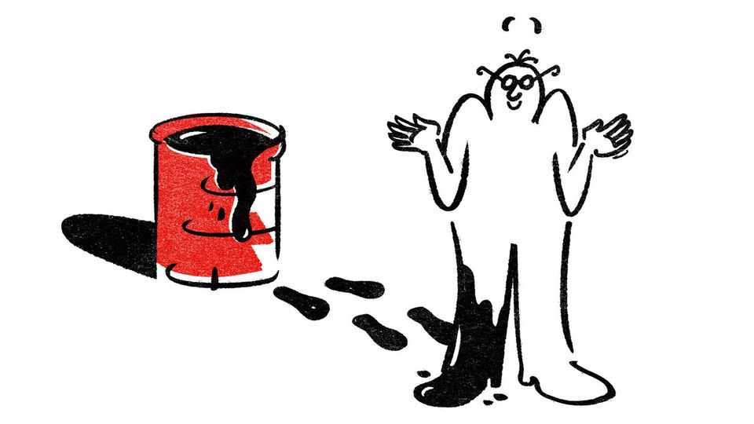

We woz wrong about oil
The market bested us. But for The Economist, there is no shame in that
July 2nd 2026

An editor of The Economist once said: “We are a paper of opinion and views. We stick our neck out and consequently risk having it chopped from time to time.” The oil price has delivered such a blow. At the end of April, almost two months after America and Israel attacked Iran, we said oil traders were in “la-la land” thinking that oil prices would fall to $88 by the end of the year. Today Brent crude costs just over $70 a barrel. Our prediction went about as well as the war.
We got it wrong for two reasons. First, we thought that America and Iran would hold out against a deal to reopen the Strait of Hormuz: America because Mr Trump deludedly thought he held the whip hand, Iran because its regime knew its people could be made to endure more pain. In fact, facing the fury of American motorists, Mr Trump all but folded, preventing a disaster. Since the two parties struck a provisional deal in June, enough oil has been getting out of the Gulf to reassure markets that supply is coming back online, even if the future of the strait remains uncertain.
Our second oversight was, like others, not anticipating the staggering degree to which China would be able to slash its oil imports. Crude imports are 5m barrels a day lower than a year ago, despite the fall in prices. China has cut its demand and shored up supply. Its oil reserves are opaque—many barrels are hidden from satellites underground, and there is a blurred line between official reserves and corporate inventories. But they have been shown to be a powerful buffer.
Perhaps a newspaper whose critics bang on about a clanger in 1999, when we wrongly predicted oil prices falling to $5 a barrel, should have known better. We woz wrong then, too. Fortunately, we can report that investors who say we are a guide to what to bet against are cherry-picking our failures. With the help of AI we analysed 7,000 of this century’s leaders. When we are moderately out-of-consensus, our record is good. Our more outlandish predictions are, unsurprisingly, more likely to be wrong.
In any case, as free-traders, we take a strange satisfaction in being bested by the markets. It is a reminder that the price of an asset in a liquid market is the closest thing there is to the distilled judgment of humanity. Prices incorporate information dispersed unevenly among countless individuals, from the amateur investor to Europe’s high-rolling oil traders. The market is not always right—and did not expect oil prices to fall as much as they did—but to think that with average luck anyone can reliably do better is to commit an error akin to that of central planners who think they can allocate resources better than the price mechanism can.
Why, then, have an opinion at all? Prediction markets cover an increasing range of events, making it easier than ever to see how the market views the future. Yet someone who reflexively substitutes the market’s opinion for their own will not know why they believe what they believe. The case for prediction is therefore like the case for free speech. Well-argued opinions sharpen the thinking of those who read them, even when they are wrong. Without such views, there would be nothing to aggregate into a market price.
So we will keep on predicting. In so doing we also hope to spare our readers a great deal of drudgery. The easiest way not to be wrong is to avoid taking any definite view at all, an approach that makes many bureaucratic reports joy-slayingly dull. We read those so you don’t have to—a service for which the occasional blunder is, we hope, a price worth paying. Sorry for our mistake. It will happen again. ■
Subscribers to The Economist can sign up to our Opinion newsletter, which brings together the best of our leaders, columns, guest essays and reader correspondence.